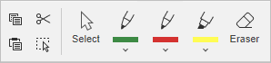
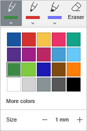

Crtanje rukom u dokumentu
U Editoru dokumenata možete koristiti karticu Crtanje da crtate rukom, dodajete rukom pisane beleške, ističete tekst i brišete u dokumentu.

Da biste crtali, pisali ili isticali tekst, kliknite na ikonu Olovka ili Marker i pomerajte kursor. Kliknite na strelicu nadole da prilagodite boju poteza i debljinu. Kliknite na Više boja ako potrebna boja nije u paleti.

Kada završite sa crtanjem, pisanjem ili isticanjem, ponovo kliknite na ikonu Olovka ili Marker, ili pritisnite taster Esc.
Kliknite na alat Gumica i pomerajte kursor napred-nazad da obrišete potez. Gumica briše samo ceo potez.
Koristite dugme Izaberi da označite natpis, crtež ili isticanje. Kada je označen, možete promeniti veličinu ili obrisati izabrani element.